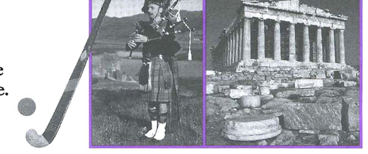

Pre-listening: A sports team trip
You are going to hear Tim, a sports team coach, talking to Amanda, a player in the team, about a trip they are going to make. Before you listen, look at the pictures. Which sport does the team play? Which two countries will they visit?

Look at the picture — identify the sport and the two countries
Listen and complete the table — Track 08
Track 08 — Tim and Amanda's conversation
Context listening — sports team trip
Listen and complete the table below. Write no more than two words or a number for each answer.
| Country | Number of matches | Number of free days | Accommodation | Other plans |
|---|---|---|---|---|
| stay in a | do lots of walking | |||
| stay in a | visit some |
Listen again and write A, B or C — Track 08
Now listen again and write:
Look at the statements in Exercise 3 and answer these questions
B1 — Present Continuous
We use the present continuous to talk about plans or definite arrangements for the future:
- We're staying in a small hotel. (we have made the arrangements)
- Notice that time expressions are used or understood from the context in order to show that we are talking about the future (and not the present):
The manager is having a party just after we get back. (time expression given)
We're playing four matches there. (future time expression understood)
B2 — Will
| Form | Example |
|---|---|
| + will + verb | We'll enjoy it. |
| − will not (won't) + verb | He won't enjoy it. |
| ? Will … + verb? | Will they enjoy it? |
We use will:
- To make predictions, usually based on our opinions or our past experience:
I think it'll be extremely hot there. - To talk about future events we haven't arranged yet:
We'll probably stay in some sort of mountain lodge there. - To talk about future events or facts that are not personal:
The best player on the tour will get a special trophy.
The prime minister will open the debate in parliament tomorrow. - To talk about something we decide to do at the time of speaking:
Tell me all about it and I'll pass on the information to the rest of the team. - To make offers, promises or suggestions:
Don't worry, I'll let everyone know. (a promise)
B3 — Going to
| Form | Example |
|---|---|
| + am/is/are going to + verb | We're going to hire a bus. |
| − am/is/are not going to + verb | He's not going to hire a bus. |
| ? Am/Is/Are … going to + verb? | Are they going to hire a bus? |
We use going to:
- To talk about events in the future we have already thought about and intend to do:
We're going to hire a bus. (we intend to go, but we haven't made the arrangements yet)
We're going to get a boat to a couple of the islands. - To make predictions when there is present evidence:
Well, we're certainly going to have a varied trip. (I am judging this from what I know about the plans) - Going to and will can follow words like thinkdoubtexpectbelieveprobablycertainlydefinitelybe sure to show that it is an opinion about the future:
I think it's going to be a great trip.
I'm sure we'll enjoy it whatever the weather.
It'll probably rain every day.
We can often choose different future forms to talk about the same future situation. It depends on the speaker's ideas about the situation:
- The manager is having a party when we get back. (definite arrangement)
- We're going to hire a bus and then drive through the mountains. (less definite arrangement — we haven't booked the bus yet)
- I'm sure we'll enjoy it. (prediction based on my guess)
- We're going to have a very varied trip! (prediction based on what I know about the weather)
Often there is very little difference between going to and will for predictions.
Grammar extra: Making predictions using words other than will
In formal writing we often use expressions other than will to predict the future (e.g. be likely to, be predicted to, be estimated to, be certain to):
The population is likely to increase to 22 million in 2011.
The average annual rainfall is predicted to be ten per cent lower than today's figures.
Fill in the gaps in this model answer with phrases from the box
Fill in the gaps in the second half of this model answer with phrases from the box.
A further possible change is that handwriting 6 obsolete. We are already so used to using a keyboard that today's children are losing the ability to spell without the aid of a word processor.
Without a doubt, even greater changes 7 in technology used in the workplace. Computers 8 to grow even more powerful and this 9 in an even faster pace of life than we have now. Let us hope that our employers 10 a way to reduce the stress on workers this fast pace can bring.
I also think these improvements in technology 11 even more globalisation than now and companies 12 very strong international links.
Underline the most suitable form of the verbs — email
Click the correct form for each numbered item:
Fill in the gaps with the present continuous or will future form
Fill in the gaps with the present continuous or will-future form of the verbs in brackets.
Elaine: Hello, how are you?
Kirsty: Fine. Listen, I know this is very short notice but 1 (do) anything tonight?
Elaine: Nothing. Why?
Kirsty: Well 2 (take) my class to the theatre, but one of them can't go. Would you like to come?
Elaine: I'd love to. What's the play about?
Kirsty: Oh, 3 (tell) you all about that a little later. 4 (pick) you up at 6.30 — is that okay?
Elaine: Yes, OK. Or how about meeting a bit earlier? We could have a coffee beforehand.
Kirsty: Well, 5 (see) the school principal at four, but I suppose I could come after that. My meeting 6 (probably/finish) at about 5.30. Is that okay?
Elaine: Yes, of course. What time does the play actually start?
Kirsty: At 7.30, although we 7 (need) to be there before as 8 (meet) my students at the theatre at seven. Afterwards they 9 (probably/want) to talk about the play for a little while. But I hope that 10 (not/go on) for too long. There 11 (be) plenty of time for us to discuss it at tomorrow's lesson.
Elaine: That's fine. 12 (see) you at 5.30!
Write sentences about yourself
Write sentences about yourself. Answers will vary.
Suggested answers: 1 I'm going to visit my grandmother. (I will visit my grandmother at the weekend — sounds like a promise rather than a planned visit) · 2 I'm travelling to America next week. · 3 I think we will stop using fax machines.
How to choose a university course
Qualifications prove you've acquired knowledge or developed skills. For some careers like medicine and law, it's essential you have specific qualifications. For others, such as journalism, it helps to have a particular qualification. Most universities set entry requirements for degree courses. Mature entrants don't always need formal qualifications, but need evidence of recent study, relevant work experience or professional qualifications. Professional bodies may grant you membership if you have certain qualifications. It's not always essential to have a qualification. Working knowledge, such as being able to use computer software, can be just as important.
Your motives will help you choose the best course for your aims and goals. If you are career-driven, you'll need a course relevant to your profession. If you are interested in self-development and meeting people, you should find out who else will be on the course. There are work-related (vocational) and academic courses. Further education colleges offer academic courses and work-related courses. Universities offer higher education qualifications, such as academic first degrees and higher degrees and the more vocational diplomas. For a career in plumbing, a vocational course is essential. For teaching, you need a degree. However, for many jobs, you have a choice between academic and vocational courses. A vocational course is better if you like doing things with your hands and working manually. You might prefer an academic course if you like researching, analysing and presenting arguments.
Do you prefer on-the-job training, or do you prefer to research and gather facts? Do you want to study full-time or part-time? If you prefer to work on your own, at your own pace, an open or distance learning course might suit you. You study from home, with the help of tuition packs, computers and tutor support via telephone or email. You can speed through the course or take your time. But you do need self-discipline and motivation.
You might prefer an open or distance learning course if: you're working and you don't know how much time a week you can commit to; you work irregular hours; you're at home looking after pre-school children. Many colleges and training centres now offer flexible open-learning courses, where you can study at your own pace.
You've decided which subject and type of course you want, and how to study it. You now need to choose between different course titles and providers. There are many courses and they aren't of equal value. The only way to assess the quality and value of a course is to check whether the course is accredited or validated by a recognised body (this might be an awarding body or a professional body). This can add extra weight to your qualification. Don't take everything you read at face value; check out the facts about each course yourself. Ask course tutors as many questions as you want.
Be clear of your goal. If you've decided on a particular job, get an idea of what the job's about and if you'll like it. Read careers information, buy trade magazines, and speak to people currently working in the job. This research is well worth it. It's better to take your time rather than do a course that leads to a job you might not really want. You'll ensure that you don't waste any time or money.
Plan for when you finish. If you're aiming for a particular job, do voluntary work while studying. If you're doing an English course and want to be a journalist, you could write for the student newspaper or work on the radio. Having a plan will help you make the most of the opportunities that come your way when you're on the course.
Questions 1–5 — Complete each sentence with the correct ending A–F
Write the correct letter A–F next to Questions 1–5.
Questions 6–9 — Classify the following statements
Classify the following statements as applying to:
Write the correct letter A–C next to Questions 6–9.
Complete the extracts with the correct verb form
2 If you are career-driven, you (need) a course relevant to your profession.
3 You (ensure) that you don't waste any time or money.
4 What (I/do) after the course?
5 Having a plan (help) you make the most of the opportunities that come your way when you're on the course.
Now answer these questions: